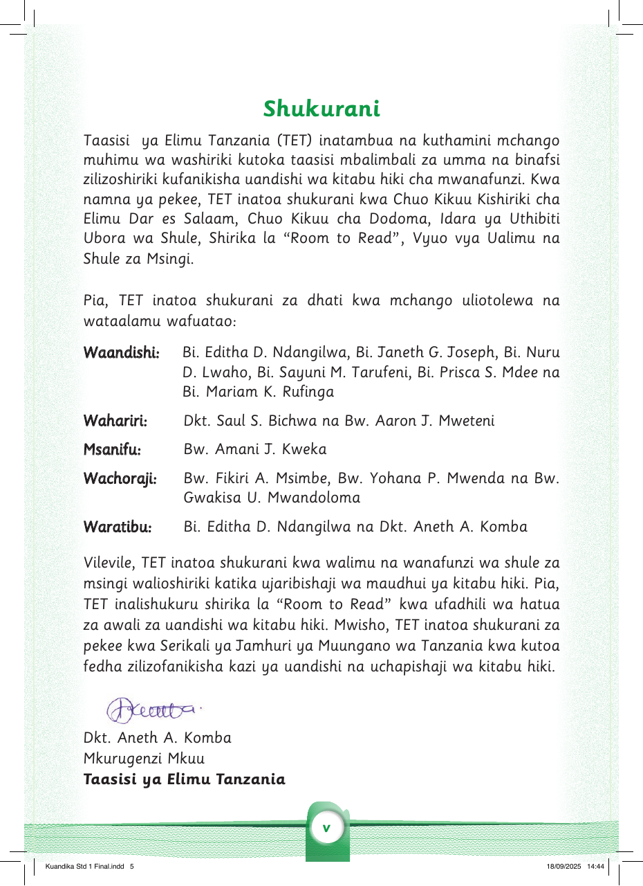

Shukurani
Taasisi ya Elimu Tanzania (TET) inatambua na kuthamini mchango muhimu wa washiriki kutoka taasisi mbalimbali za umma na binafsi zilizoshiriki kufanikisha uandishi wa kitabu hiki cha mwanafunzi.
Kwa namna ya pekee, TET inatoa shukurani kwa Chuo Kikuu Kishiriki cha Elimu Dar es Salaam, Chuo Kikuu cha Dodoma, Idara ya Uthibiti Ubora wa Shule, Shirika la “Room to Read”, Vyuo vya Ualimu na Shule za Msingi.
Pia, TET inatoa shukurani za dhati kwa mchango uliotolewa na wataalamu wafuatao:
Waandishi: Bi. Editha D. Ndangilwa, Bi. Janeth G. Joseph, Bi. Nuru D. Lwaho, Bi. Sayuni M. Tarufeni, Bi. Prisca S. Mdee na Bi. Mariam K. Rufinga.
Wahariri: Dkt. Saul S. Bichwa na Bw. Aaron J. Mweteni. Msanifu: Bw. Amani J. Kweka. Wachoraji: Bw. Fikiri A. Msimbe, Bw. Yohana P. Mwenda na Bw. Gwakisa U. Mwandoloma. Waratibu: Bi. Editha D. Ndangilwa na Dkt. Aneth A. Komba.
Vilevile, TET inatoa shukurani kwa walimu na wanafunzi wa shule za msingi walioshiriki katika ujaribishaji wa maudhui ya kitabu hiki. Pia, TET inalishukuru shirika la “Room to Read” kwa ufadhili wa hatua za awali za uandishi wa kitabu hiki.
Mwisho, TET inatoa shukurani za pekee kwa Serikali ya Jamhuri ya Muungano wa Tanzania kwa kutoa fedha zilizofanikisha kazi ya uandishi na uchapishaji wa kitabu hiki.
Dkt. Aneth A. Komba, Mkurugenzi Mkuu, Taasisi ya Elimu Tanzania.